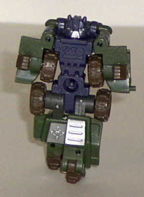
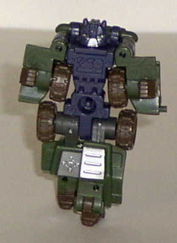
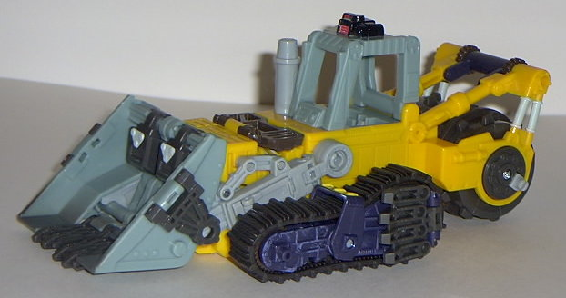

Rollbar
Rollbar

Allegiance : Minicon
Size : Mini-Con
Difficulty of Transformation : Very Easy
Color Scheme : Dark forest green, dark muddy brown, dark flat navy blue, and some charcoal blue-black, white, and silver
Rating : 6.1
(NOTE: Because this set is a repaint, this is not a full-blown review. This mainly covers any changes made to the set and the color scheme, and merely compares it to Armada Scavenger w/ Rollbar. For a review on the mold itself, read the review of Armada Scavenger w/ Rollbar here .)
Rollbar

Allegiance
: Minicon
Size
: Mini-Con
Difficulty of Transformation
: Very
Easy
Color Scheme
: Dark forest green,
dark muddy brown, dark flat navy blue, and some charcoal blue-black, white,
and silver
Rating
: 6.1
This time around, Rollbar
sports a color scheme that is definitely a homage to G1 Hound-- this is
especially apparent in vehicle mode. Not only is he pretty much the same
color- a dark forest green that they use on many military vehicles- but
he also has that white star on the hood. The dark navy blue goes very well
with the green, and the brown gives Rollbar even more of a "military" feel
than he already has, which is great. The silver paint apps also look great
all around, as they almost always do.
No mold changes have
been made to Energon Rollbar.
Rollbar is a really
nice repaint of the Armada version of him, and a great homage to G1 Hound.
Although I think the actual mold is rather uninventive, he's certainly
rather nice to look at.
 Treadbolt
Treadbolt

Allegiance
: Autobot
Size
: Mega
Difficulty of Transformation
: Medium
Color Scheme
: "Cheese" yellow, charcoal
blue-black, pale light blue-green, pale light blue-green, and some dark
muddy brown, shiny black, pale light powder blue, shiny dark blue, and
dark flat navy blue
Powerlinx ports
: 3 (1 gimmicked)
Rating
: 6.3
Treadbolt's color scheme
is... pretty bad. The cheese yellow and pale blue-green clash quite a bit,
and simply don't go together in the least. The charcoal blue-black is also
just an ugly color, and wouldn't look good on any Transformer. It would
have been better if it was just plain black. His face in robot mode also
looks positively comical in the way it's painted- something that I'm sure
wasn't intended, which bothers me. Simply but, Treadbolt looks like Wario
in robot mode. He's got the mustache, the yellow colors, the mean look
in his eyes... y'know, the works. All he would need is overalls and a cap.
On the plus side, he's not a straight pallet switch- many of his paint
apps are different than on his predecessor Scavenger. This shows that at
least some thought went into Treadbolt. The dark blue on his arms also
looks pretty cool, especially with the "worn" look given to them by the
light blue wash paint app.
No mold changes have
been made to Treadbolt.
Treadbolt is a bad repaint
of an already bad $20 mold. As such, I can't recommend him to anyone who
isn't a completist. Bleh.
Review by Beastbot